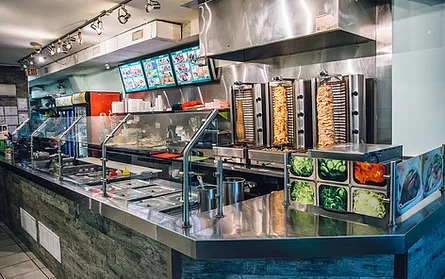

We are Donair World
We take pride in delivering quality meals made fresh, right in front of your eyes.
Our chicken, beef and lamb is slow roasted to perfection.
Our pitas, tortillas, and rice plates are made with only the freshest quality ingredients.
Some of our testemonials
straight.com
"There are plenty of places to find slabs of meat around town, but Donair World is one place that does it right."
nsnews.com
"It’s hard not to like a place called Donair World."
westender.com
Best of the City: Dining 2016 - Reader's choice"Best Donair - 1. Donair World"
foodgressing.com
"Donair World is one such eatery that is open until late offering large-sized donairs with fresh ingredients that’s also easy on the wallet.... The donairs were just a handful of yumminess without being too heavy."